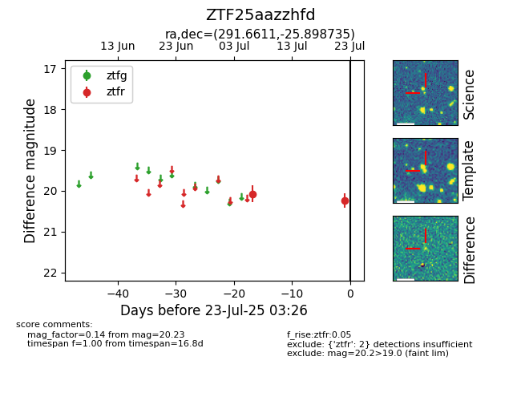

Target ZTF25aazzhfd at 2025-07-23 12:37, see:
FINK: fink-portal.org/ZTF25aazzhfd
Lasair: lasair-ztf.lsst.ac.uk/objects/ZTF25aazzhfd
ALeRCE: alerce.online/object/ZTF25aazzhfd
alt names
ZTF25aazzhfd (ztf,fink)
coordinates:
equatorial (ra, dec) = (291.6611,-25.89873)
galactic (l, b) = (12.7951,-18.76393)
photometry
last ztfr=20.23
2 ztfr detections
